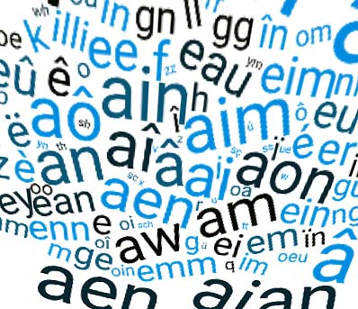

Ces pages décrivent plusieurs bases de données lexicales analysant le vocabulaire écrit rencontré par les enfants à l'école élémentaire Française au niveau de leurs caractéristiques orthographiques, grapho-phonologiques, et morphologiques. Les bases de données ont été créées afin d'assister les chercheurs dans les études empiriques et les éducateurs dans la conception de programmes d'alphabétisation en relation avec les caractéristiques distributionnelles des patrons orthographiques, phonologiques ou morphologiques. Les différentes bases et analyses sont téléchargeables sur le site.
Brèves descriptions: Manulex_Infra (ver. 2) et Manulex_Morpho (ver. 2) sont deux bases de données dérivées de Manulex une base de données accessible sur internet fournissant les fréquences des mots pour près de 49.000 entrées lexicales rencontrées dans 54 livres scolaires en usage dans l'enseignement élémentaire. Leurs développements ont été motivés par l'observation que l'analyse des textes écrits actuels destinés aux enfants ne fournissent que des estimations statistiques relatives à la fréquence d'occurrence des mots. En dépit de son intérêt, la fréquence des mots est loin d'être l'unique facteur influençant la performance de lecture et d'écriture, et des bases de données plus spécialisées sont donc nécessaires. En particulier, il est bien établi maintenant que les caractéristiques statistiques du langage, telle que la consistance des relations entre orthographe et phonologie, influencent l'acquisition de la lecture et de l'écriture. L'objectif de Manulex_infra est donc de fournir des estimations quantitatives sur plusieurs variables infra-lexicales (syllabes, relations graphème-phonème, bigrammes...), et lexicales (voisinage lexical, homophonie, homographie). A la différence de Manulex_infra, la structure morphologique des mots écrits est aussi prise en compte dans Manulex_morpho pour les estimations de la consistance des correspondances orthographe-phonologie (morphologie flexionnelle, terminaisons silencieuses des mots qui sont prononcées dans les formes fléchies/dérivées).
La version actuelle de ces deux bases de données est v.2. Plusieurs corrections ont été apportées aux versions précédentes.
Contact
• Ronald Peereman, Université Grenoble-Alpes, Laboratoire de
Psychologie et NeuroCognition
(LPNC).ronald.peereman@univ-grenoble-alpes.fr
• Liliane Sprenger-Charolles, Aix Marseille Université, Laboratoire de
Psychologie Cognitive (LPC).liliane.sprenger.charolles@gmail.com
• Souhila Messaoud-Galusi, Consultante – Spécialiste en lecture.
Research Triangle Institute, Education Policy and Systems, Washington,
DC, USA. messaoudgalusi@gmail.com